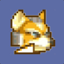
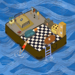

Achievements
(Info about achievements)
|  |  | ||
| Michael | Matthew | Mason | Mavis |
ReLeave was designed by a team of four students at Western Washington University (WWU) with the intent of helping cannabis users meet their goals of cutting back or quitting. After interviewing some current and former users of cannabis, we drafted an initial design, and a month and a half later, have a working prototype that matches with our original design. On this site you can explore some of the different features of ReLeave and see how the app compares with the prototype we began with.
One piece of feedback we received from an interviewee was that having tangible goals and expressions of how quitting marijuana affected their life would be useful. Based on this, we've implemented a goals page where users can save goals and track their progress. Goals can either be towards saving money or abstaining from a certain amount of cannabis use.
(Info about achievements)
The cornerstones of our app are the journal, which allows the user to look back on their feelings and progress, and the sobriety counter, which tracks how long the user has been sober. Each day the user can journal how they're feeling and will also input whether they've used cannabis that day.
This is the prototype design of the app, which went through several revisions before arriving at this version. After finalizing this prototype, development began and decisions about what to cut or include occurred on the fly.